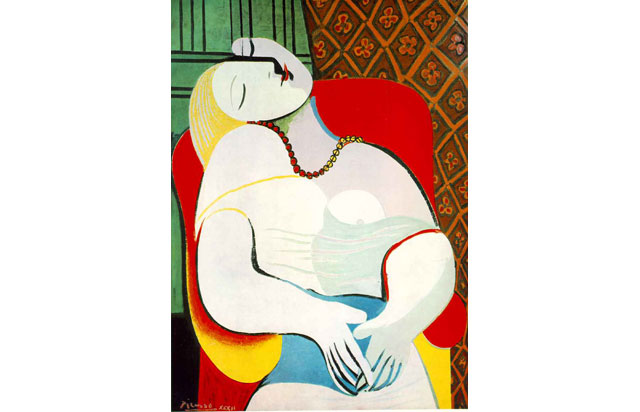

- Le Rêve (Türkçe: Rüya), o zamanlar 50 yaşında olan Pablo Picasso'nun 22 yaşındaki metresi Marie-Thérèse Walter'ı tasvir ettiği, 1932 tarihli tuval üzerine yağlıboya tablosudur (130 × 97 cm). 24 Ocak 1932'de bir öğleden sonra boyandığı söyleniyor. Aşırı basitleştirilmiş hatları ve erken kübizmi andıran kontrast renkleriyle Picasso'nun çarpık tasvirler dönemine ait. Tablonun erotik içeriği defalarca dile getirildi; eleştirmenler Picasso'nun modelinin yukarı dönük yüzüne muhtemelen kendisininkini simgeleyen dik bir penis çizdiğine dikkat çekti. 26 Mart 2013 tarihinde tablo özel bir satışta 155 milyon dolara satılarak şimdiye kadar satılan en pahalı tablolardan biri oldu.
ANASAYFAYA GERİ DÖN